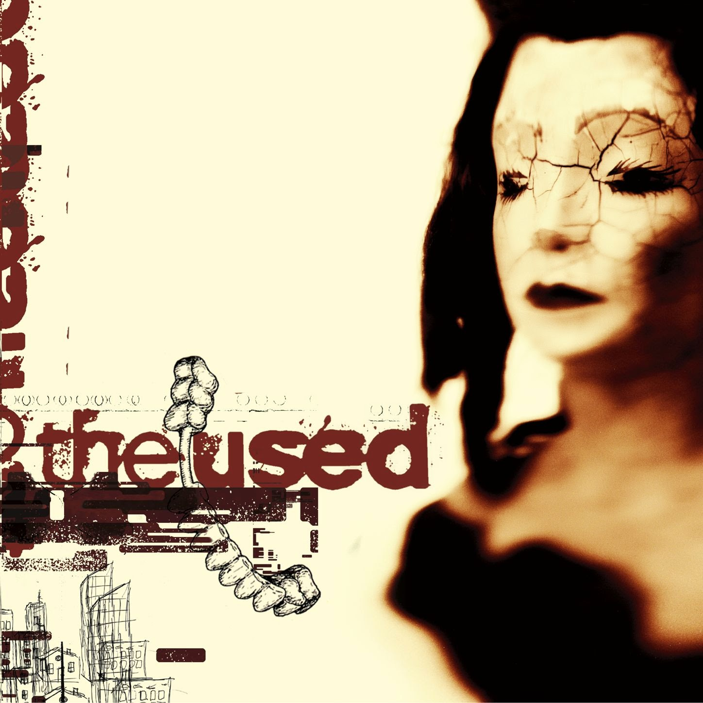

The Used - The Used
Created: 2021-04-14 | Modified: 2021-07-18

Post-hardcore album from 2001. The Used by The Used.
The Used was a semi-popular band during the mid to late 2000s, sort of dwindling in popularity after producing less and less hits. Unfortunately, because of only being recognized for their mediocre contribution (later on) to pop-punk music, many missed out on their heavier, more abrasive, debut album from 2001 (this album). It's an album categorized by harsh screams, melodic vocals, the classic tonality of post-hardcore guitar sound, and allusions to drug use (a few times outright).
During the production of the album, lyrics were written solely by the lead singer, Bert McCracken. Nearly every song speaks grittily about the front-man's past methamphetamine dependency with concentrated anger, funneled directly, unadulterated into the microphone hanging in the closet of the homemade recording studio.
The amount of effort put into this album by the vocalist/lyricist is astonishing. His vocal style ruined his voice not long after making this album, or the next. His voice is still good, but he could never produce screams after surgery. His vocal style on this album was impressive, but not sustainable. He used to vomit after songs during many of his live shows because of it, so I guess you could say he really paid the toll for his art.
Favorite song: Say Days Ago
See also:
 2020, 2021 (C) Brody Rethy. All rights reserved.
2020, 2021 (C) Brody Rethy. All rights reserved.